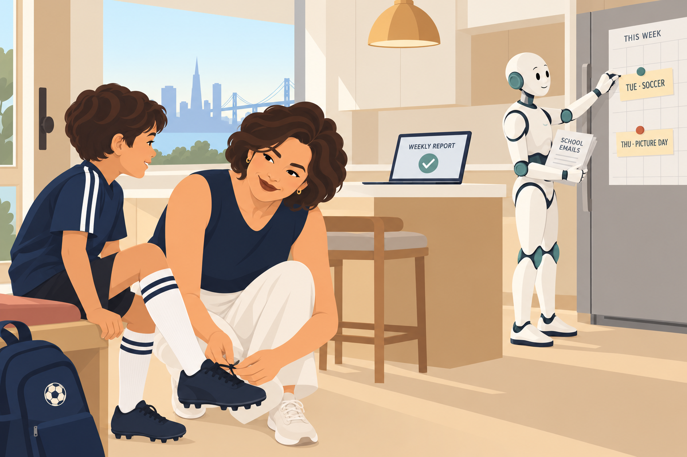
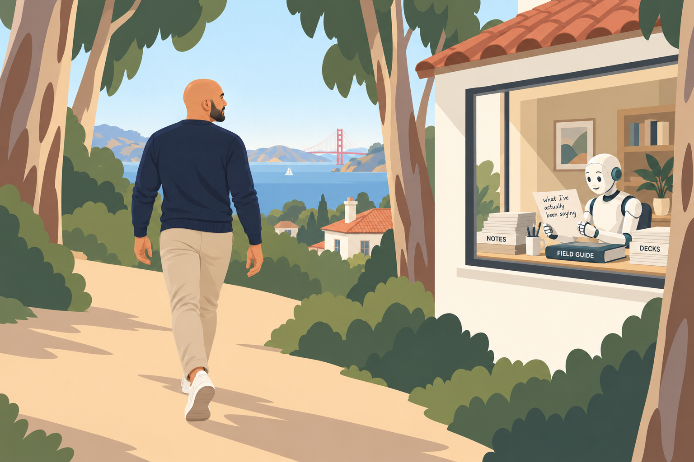

The weekly report
Gather the updates, draft the report, and flag what’s missing. You check the story the numbers are telling.
THE +AI FALL COHORT
Bring one recurring task from work or home. In six live sessions, build an AI agent around it and learn when to trust its work.
Enroll · $750For people who already use AI chat.
No coding background needed.
*The weekly time is being chosen from participant availability.
START WITH SOMETHING FAMILIAR
The report you rebuild every week. The follow-ups that slip. Seventeen school emails a day, per kid. Start with one of those.
Gather the updates, draft the report, and flag what’s missing. You check the story the numbers are telling.
Turn meeting notes into useful next steps and follow-up drafts. You decide what to send and when.
Pull out dates, forms, and things to remember. You review one family briefing instead of hunting through emails.

WORK AND LIFE BOTH COUNT
You set the standard. The agent handles a defined piece of the work. You learn where to let it run, where to review, and when it needs to ask you.
That’s what we’ll practice together.
SIX SESSIONS. YOUR OWN TASK.
We’ll work through one manageable workflow over the series, with live guidance and room to learn from each other’s experiments.
Session one is for orientation and setup. The build develops over the following weeks.
Understand the step from chatting to delegating. Get set up and choose a task worth working on.
Map the inputs, the result you need, and the decisions that should stay with you.
Give your agent clear instructions, examples, and the information it needs for a first working version.
Try missing information and messy inputs. Learn how to spot weak work and improve it.
Decide what’s ready to run regularly and where a check from you belongs.
Know what happened, what needs attention, and how to maintain what you’ve built.
A focused build around a responsibility you actually have, shaped around your context and standards.
Examples, tests, and clear review points that help you decide when to trust the result.
A method you can reuse for the next task, including knowing when an agent isn’t the right answer.
YOUR GUIDE · DANOOSH KAPADIA

One of my agents read years of my notes and teaching material while I was out on a hike in the Presidio.
The build was the easy part. The real work was deciding what to hand over, how much context to give it, and where my judgment still had to show up.
That’s the work I want us to do together.
This cohort is for working professionals, independent business owners, and people between roles who want to move beyond a good chat into something they can use again next week.
Bring curiosity, a recurring task, and a willingness to try things between sessions. You can work with personal accounts or permitted files if your company’s tools are off limits.
We’ll keep the scope small enough to work on together.
THE FALL 2026 COHORT
Six mornings to build something useful, with people asking many of the same questions you are.
USD $750
One payment for the six-session cohort.
Try the cohort. If it doesn’t work for you, ask for a full refund.
Thursday or Friday morning, Pacific. The exact weekly time is still being chosen.
Secure checkout with Stripe.
Need the confirmed time? Join the waitlistNo. This is designed for business professionals who already use AI chat tools. We’ll work through the setup and building process together.
Bring a few things you find yourself doing again and again. We’ll help you choose a narrow, useful starting point during orientation.
Yes. School emails, a family briefing, and household admin are as welcome as reports and client follow-ups. Work and personal life both count.
You can work with personal accounts or files you’re allowed to use. You don’t need access to your company’s systems to take part.
Six weekly, 60-minute sessions, beginning in mid-October and ending before Thanksgiving. We’re choosing a Thursday or Friday morning time in Pacific time. If the time determines whether you can join, use the waitlist to share your availability.
You get a full refund. If the cohort doesn’t work for you, let Danoosh know and ask for your money back.
Guidance and support during the live calls. The focus is on making progress with your own task and learning from the group’s builds.